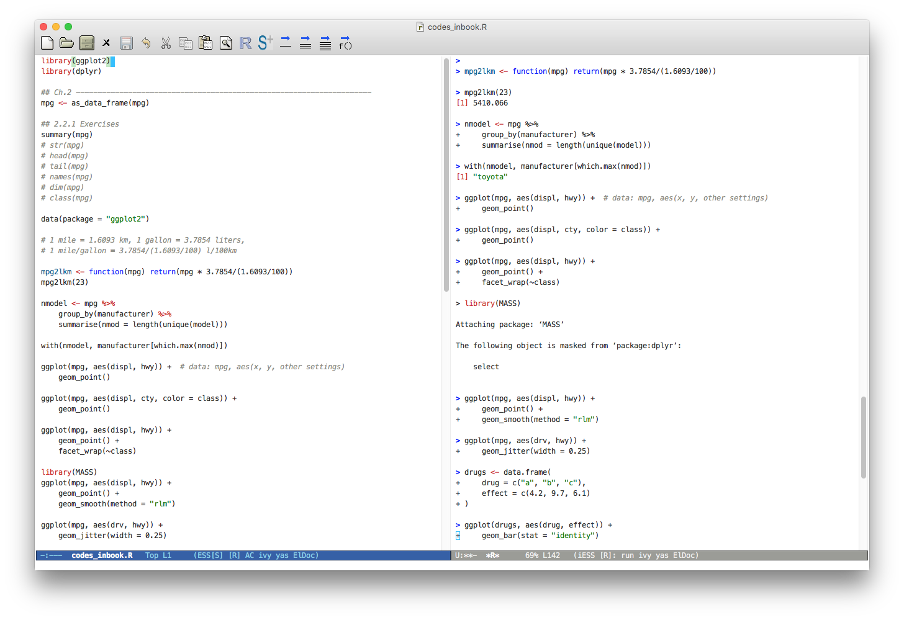
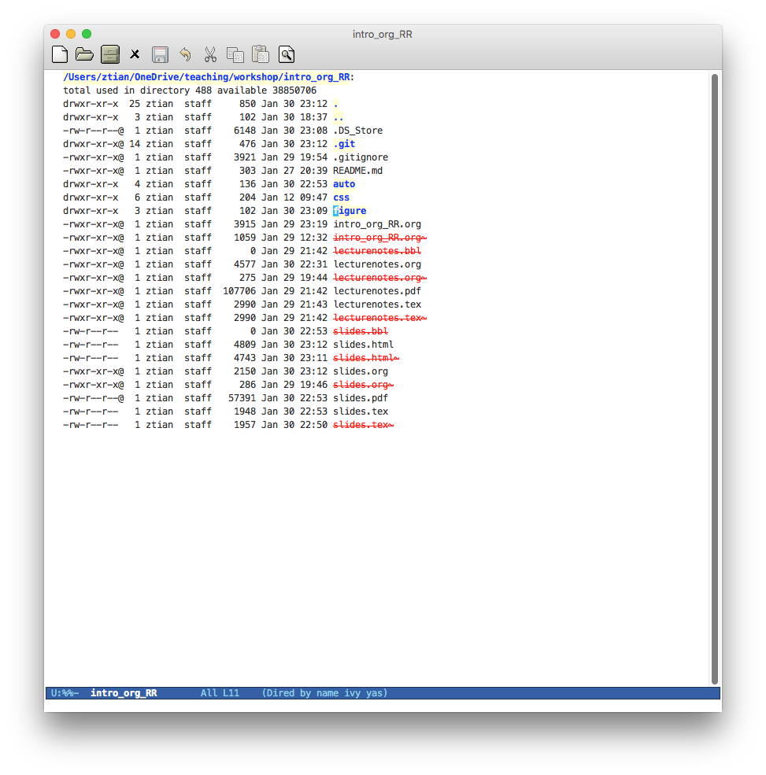
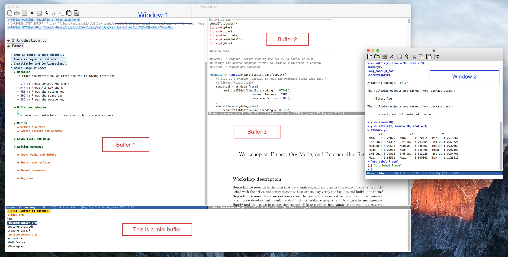
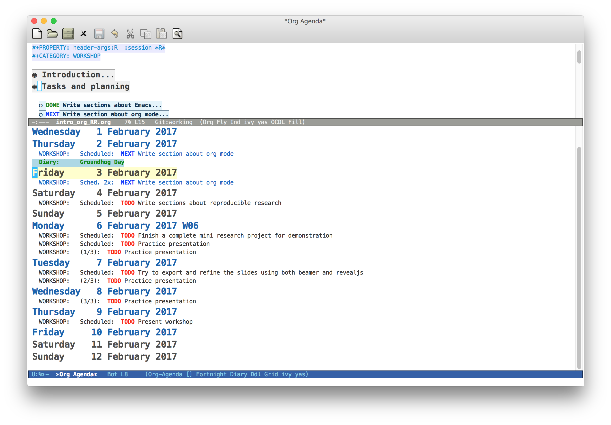
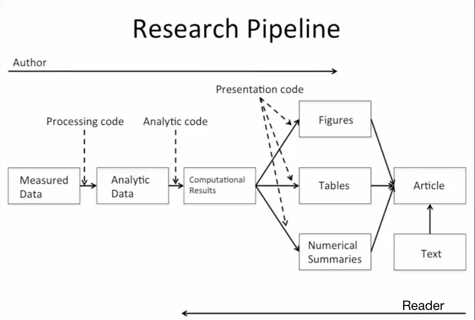
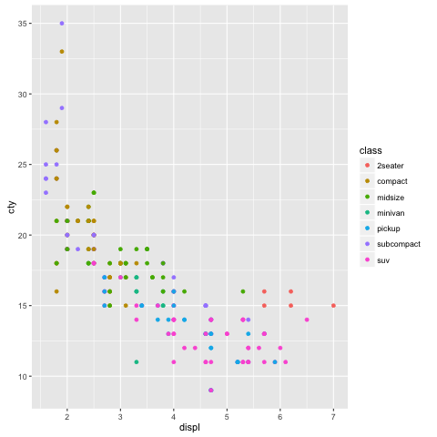

Created: 2017-02-06 Mon 10:41
GNU Emacs is a free, portable, extensible text editor.

Figure 1: An illustration of the ESS mode

Figure 2: Emacs as an operating system with the dired mode
Emacs is customizable and all customized configuration can be done
with either a .emacs file or init.el under the directory
~/.emacs.d.
With some settings, we can use an org file to organize and apply your customization.
All my settings have been uploaded to Github from where you can
download or clone git clone
https://github.com/zngtian/.emacs.d.git.
In Emacs documentation, we often see the following notations
The basic user interface of Emacs is in buffers and windows

Figure 3: An example of Emacs buffers and windows
Org mode is one of the most popular contributed packages in Emacs. It can accomplish a variety of work including, but not limited to,
* Top level headline
** Second level
*** 3rd level
some text
*** 3rd level
more text
* Another top level headline
- Unordered list + Item 1 + Item 2 - Ordered list 1. first thing 2. second thing 3. third thing - Description - Tom :: a cat - Jerry :: a mouse - List with check box - [X] Do this - [ ] Do that
The basic syntax for a link:
[[link][description]] or [[link]]
Internal link: Lists
[[Lists]]
External link: slides.tex
[[file:slides.tex]]
URL: http://rri.wvu.edu/
[[http://rri.wvu.edu/]]
#+BEGIN_... and #+END_...The CENTER block
This sentence will be centered in the exported file
#+BEGIN_CENTER This sentence will be centered in the exported file #+END_CENTER
The QUOTE block
Everything should be made as simple as possible, but not any simpler – Albert Einstein
#+BEGIN_QUOTE Everything should be made as simple as possible, but not any simpler -- Albert Einstein #+END_QUOTE
Org mode can contain LaTeX math fragments that don't need any special marking. Just do as in LaTeX.
\begin{equation}
x=\sqrt{b}
\end{equation}
If $a^2=b$ and \( b=2 \), then the solution must be
either $$ a=+\sqrt{2} \text{ or } a=-\sqrt{2} $$
If \(a^2=b\) and \( b=2 \), then the solution must be either \[ a=+\sqrt{2} \text{ or } a=-\sqrt{2} \]
‘|’ as the first non-whitespace character starts a table. The following texts yield a table in HTML export
| Name | Age | Score | |-------+-----+-------| | Peter | 17 | 1234 | | Anna | 25 | 4321 |
| Name | Age | Score |
|---|---|---|
| Peter | 17 | 1234 |
| Anna | 25 | 4321 |
| Name | Age | Score | |-------+-----+-------| | Peter | 17 | 1234 | | Anna | 25 | 4321 | | | 21 | 5555 | #+TBLFM: @4$2=vmean(@2..@3)::@4$3=vsum(@2..@3)
| Name | Age | Score |
|---|---|---|
| Peter | 17 | 1234 |
| Anna | 25 | 4321 |
| 21 | 5555 |
C-c C-e: start the export dispatcher.C-c C-e l O to
generate the beamer file.og-reveal package.#+TITLE, #+AUTHOR, #+OPTIONS, #+LATEX_HEADER, #+HTML_HEADER,
etc.Org mode is not just a text editor that can include a rich variety of elements but also a handy tool to plan daily life and manage research projects.

Figure 4: An illustration of agenda view
TODO items in org mode are headlines defined by TODO keywords after asterisks.
* [#A] TODO Do this first. * DONE This task has been done
We can set schedule and deadline to TODO items.
* [#A] TODO Do this first. SCHEDULED: <2017-02-03 Fri> * DONE This task has been done DEADLINE: <2017-02-03 Fri>
All TODO items, schedules, and deadlines can be viewed in the Agenda view in org mode.
Within the agenda view, you can filter by tag, change the status, and go to the headline of a TODO item.
The data and code used to make a finding are available and they are sufficient for an independent researcher to recreate the finding. – Gandrud (2015)

Figure 5: A workflow of reproducible research (Source: Peng (2015))
Roger Peng (2015) summarizes four essential elements to make results reproducible:
Literate programming (Donald Knuth, 1992) is the central part of reproducible research.
Typically, literate programming involves the following three steps (Xie, 2015):
roxygen2 (Wickham et al., 2015)knitr (Xie, 2015b)The basic structure of code blocks is as follows
#+NAME: <name> #+BEGIN_SRC <language> <switches> <header arguments> <body> #+END_SRC
The structure of an inline code block is
src_<language>[<header arguments>]{<body>}
#+BEGIN_SRC emacs-lisp :eval no
(org-babel-do-load-languages
'org-babel-load-languages
'((R . t)
(python . t)
(emacs-lisp . t)
(calc . t)
(latex . t)
(org . t)
(sh . t)))
(setq org-confirm-babel-evaluate nil)
#+END_SRC
Header arguments fine-tune the behaviors of a source block.
| Header arguments | Example |
|---|---|
| :exports | :exports results or :exports none |
| :results | :results value table or :results silent |
| :eval | :eval no |
| :cache | :cache yes |
| :file | :file ./img/figure1.png |
#+BEGIN_SRC R :exports both :results output library(ggplot2) head(mpg[1:5]) #+END_SRC #+RESULTS: : manufacturer model displ year cyl : 1 audi a4 1.8 1999 4 : 2 audi a4 1.8 1999 4 : 3 audi a4 2.0 2008 4 : 4 audi a4 2.0 2008 4 : 5 audi a4 2.8 1999 6 : 6 audi a4 2.8 1999 6
#+BEGIN_SRC R :exports results :results value table :colnames yes :cache yes head(mpg[1:5]) #+END_SRC #+RESULTS[f45a5d1174dd12cdb343701a0868203eda23a5bc]: | manufacturer | model | displ | year | cyl | |--------------+-------+-------+------+-----| | audi | a4 | 1.8 | 1999 | 4 | | audi | a4 | 1.8 | 1999 | 4 | | audi | a4 | 2 | 2008 | 4 | | audi | a4 | 2 | 2008 | 4 | | audi | a4 | 2.8 | 1999 | 6 | | audi | a4 | 2.8 | 1999 | 6 |
#+BEGIN_SRC R :exports both :results output graphics :file mpg.png
ggplot(mpg, aes(displ, cty, colour = class)) +
geom_point()
#+END_SRC
#+ATTR_HTML: :width 600 :height 500
#+ATTR_LATEX: :width 0.6\textwidth :height 0.6\textheight
#+RESULTS:
[[file:mpg.png]]

Figure 6: The Scatterplot Between the Engine Displacement and City MPG
#+BEGIN_SRC R :exports both :results output latex
library(stargazer)
stargazer(mpg, header = FALSE)
#+END_SRC
#+RESULTS:
#+BEGIN_EXPORT latex
% Table created by stargazer v.5.2 by Marek Hlavac, Harvard University. E-mail: hlavac at fas.harvard.edu
% Date and time: Mon, Feb 06, 2017 - 09:45:31
\begin{table}[!htbp] \centering
\caption{}
\label{}
\begin{tabular}{@{\extracolsep{5pt}}lccccc}
\\[-1.8ex]\hline
\hline \\[-1.8ex]
Statistic & \multicolumn{1}{c}{N} & \multicolumn{1}{c}{Mean} & \multicolumn{1}{c}{St. Dev.} & \multicolumn{1}{c}{Min} & \multicolumn{1}{c}{Max} \\
\hline \\[-1.8ex]
displ & 234 & 3.472 & 1.292 & 1.600 & 7.000 \\
year & 234 & 2,003.500 & 4.510 & 1,999 & 2,008 \\
cyl & 234 & 5.889 & 1.612 & 4 & 8 \\
cty & 234 & 16.859 & 4.256 & 9 & 35 \\
hwy & 234 & 23.440 & 5.955 & 12 & 44 \\
\hline \\[-1.8ex]
\end{tabular}
\end{table}
#+END_EXPORT
The following file is an example of reproducible research, which I used in teaching Econometrics.